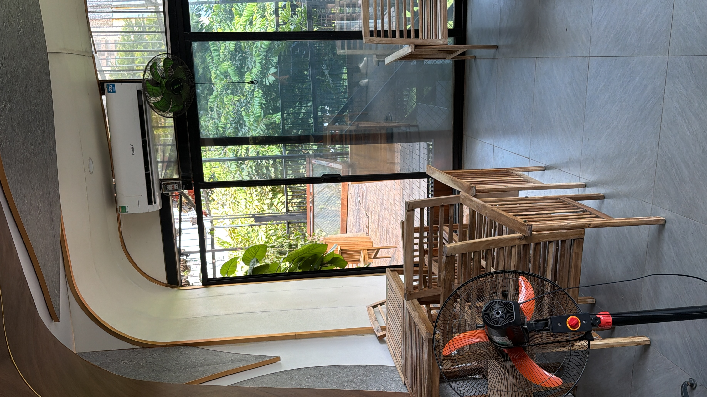
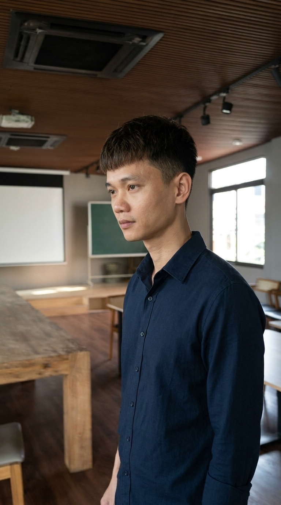
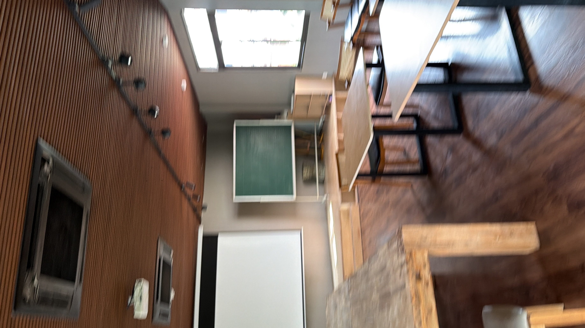
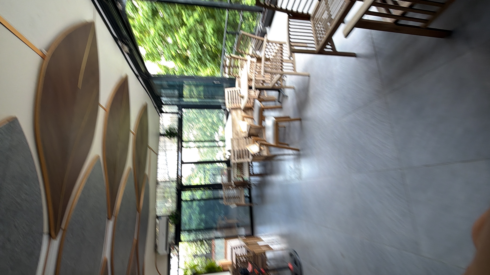
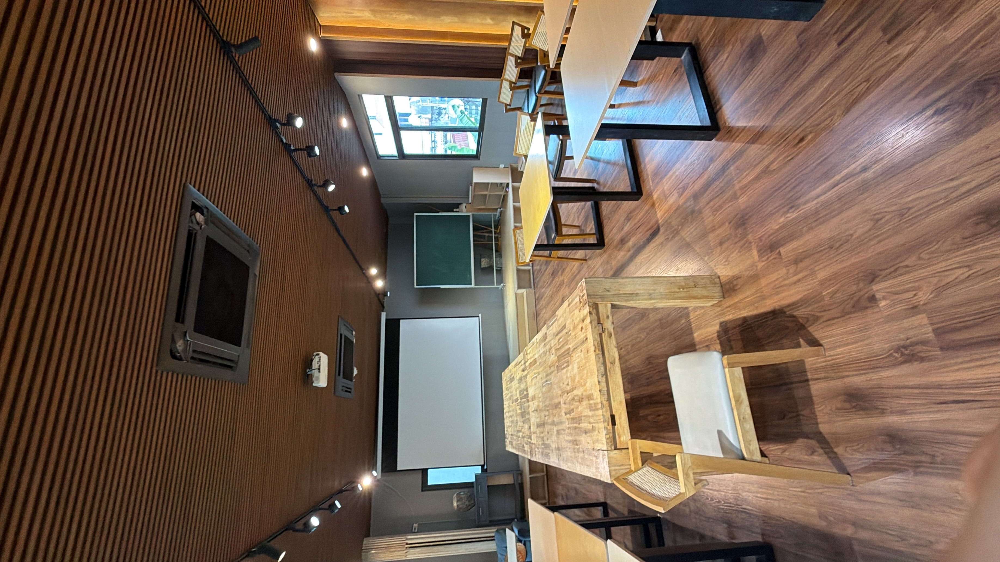
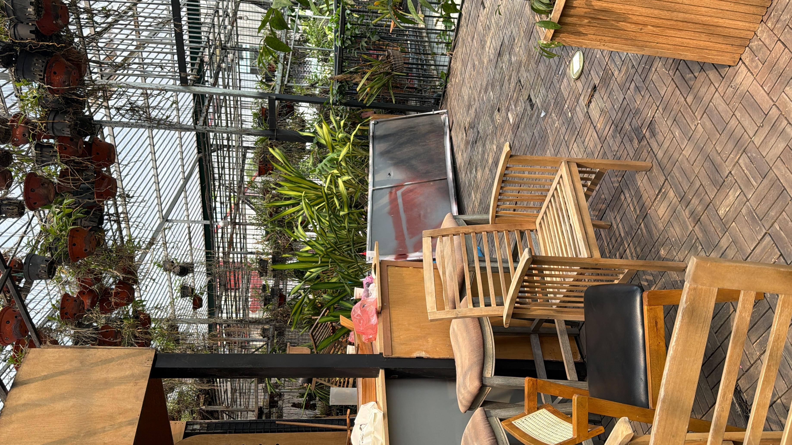
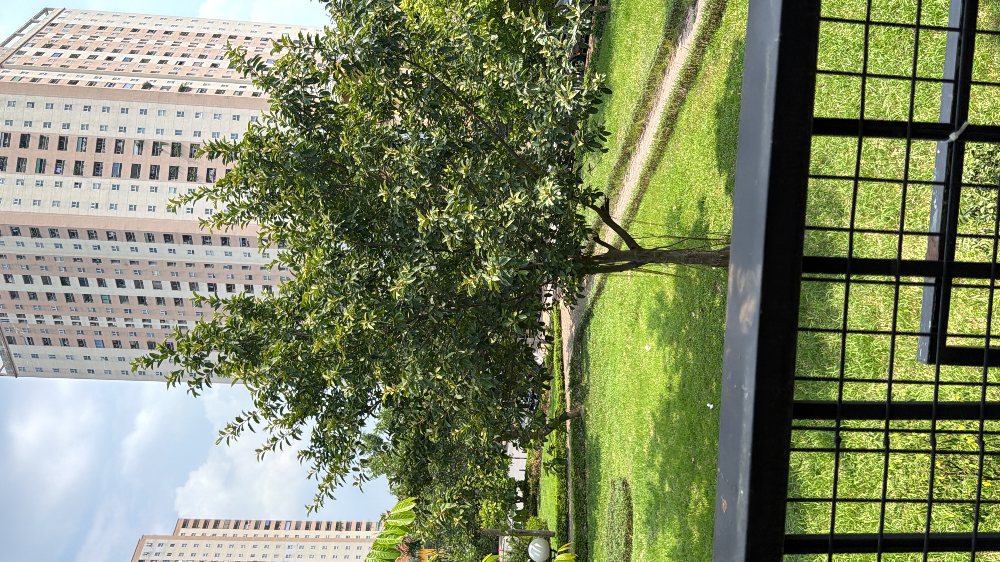
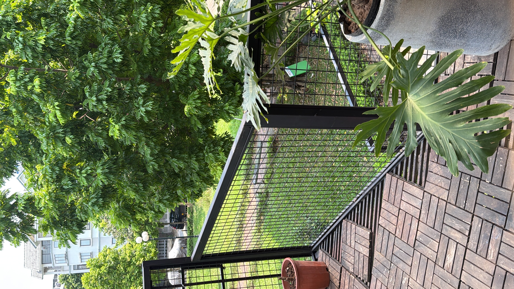

❓ Cách để làm video với đề bài này hấp dẫn là gì?
Phản xạ đầu tiên của 90% người cầm máy là chọn phương án an toàn nhất: nói những điều nghe có vẻ đúng đắn, tích cực nhưng hoàn toàn rỗng ruột.
"Nhận ra đạo lý bị người ta ghét, người làm bắt đầu chuyển sang kể cảm giác thật..."
"Càng muốn thật, người ta càng dễ rơi vào cái bẫy than nghèo kể khổ..."
Bóc trần nghịch lý ngồi nắn nót tỉ mẩn cả ngày nhưng tối về nhìn sổ thu chi lại thắt lòng để giải phóng trách nhiệm truyền thông của người làm có tâm.
Ngắt nhịp thở tự nhiên • 100% chuẩn văn nói trà đá đĩnh đạc, không từ ngữ hoa mỹ, không đạo lý sáo rỗng.
"Nội dung kịch bản ở trên đã có độ sâu rất tốt, nhưng nếu Cảnh 1 không giữ được ngón tay người xem trong 2 giây đầu thì thông điệp hay đến mấy cũng không ai xem."

| Góc máy: | Cực cận ngón tay tỉ mẩn |
| Hành động: | Bàn tay cầm bút nắn nót từng nét vẽ thiết kế chi tiết trên mặt bàn gỗ Greenhub. |
| Góc máy: | Góc nhìn qua vai sổ doanh thu |
| Hành động: | Góc nhìn qua vai thấy cuốn sổ ghi chép doanh thu ít ỏi đặt cạnh sản phẩm công phu. |

| Góc máy: | Trung cận thở dài trầm tư |
| Hành động: | Ngẩng đầu lên, nét mặt đượm buồn nhìn quanh không gian phòng học Greenhub vắng vẻ. |

| Góc máy: | Góc nhìn điện thoại xem đối thủ |
| Hành động: | Cầm điện thoại xem video của đối thủ đông nghịt khách bên bàn gỗ Greenhub. |
| Góc máy: | Cận cảnh cái nhíu mày trăn trở |
| Hành động: | Khuôn mặt đăm chiêu, cái nhíu mày sâu sắc tự vấn lương tâm nghề nghiệp. |

| Góc máy: | Đứng dậy bước ra sảnh kính |
| Hành động: | Đứng dậy rời bàn làm việc, bước ra khu vực sảnh kính Greenhub ngập tràn ánh sáng. |

| Góc máy: | Trung cảnh tựa người bên kính |
| Hành động: | Đứng tựa người bên vách kính lớn Greenhub, nhìn ra khoảng trời xanh biếc bên ngoài. |
| Góc máy: | Góc cận ánh mắt thức tỉnh |
| Hành động: | Ánh mắt bừng sáng, không còn oán trách mà nhìn thấy trách nhiệm của chính mình. |

| Góc máy: | Bước chân mạnh mẽ ra ban công |
| Hành động: | Sải bước dứt khoát đi ra khu vực ban công cây xanh ngoài trời Greenhub. |
| Góc máy: | Toàn cảnh ban công nhiều cây |
| Hành động: | Đứng giữa giàn cây xanh tươi mát của ban công Greenhub, phong thái tự tại. |

| Góc máy: | Trung cảnh cầm điện thoại lên |
| Hành động: | Cầm chắc máy quay trên tay, góc máy thẳng thắn không chút ngần ngại. |
| Góc máy: | Cận cảnh nụ cười đĩnh đạc |
| Hành động: | Nụ cười tự tin, khí chất của một người thợ lành nghề sẵn sàng chia sẻ. |

| Góc máy: | Toàn cảnh terrace khoáng đạt |
| Hành động: | Toàn cảnh góc rộng khu terrace tầng cao Greenhub, tư thế hiên ngang bản lĩnh. |
| Góc máy: | A-Roll trực diện đanh thép |
| Hành động: | Nói thẳng vào camera câu chốt đầy tự hào và bản lĩnh của người làm có tâm. |
| Góc máy: | Đặc tả đôi bàn tay cầm máy |
| Hành động: | Đôi bàn tay thợ khéo léo bấm lưu video, chuẩn bị đăng tải sản phẩm đầu tiên. |
"Tay nghề của bạn là linh hồn, nhưng video ngắn là đôi cánh. Một linh hồn dù cao đẹp đến mấy nếu không có đôi cánh thì không bao giờ bay đến được với những người đang khao khát nó."
Khách hàng không mua sản phẩm, họ mua công sức và sự tỉ mẩn mà bạn đã đổ vào sản phẩm đó. Hãy quay lại từng công đoạn khó nhất cho họ thấy.
Những kẻ làm ăn chộp giật rất sợ quay cận cảnh quy trình vì sẽ lộ tẩy sự cẩu thả. Quay quy trình thật là vũ khí độc quyền chỉ người làm có tâm mới dám dùng.
Đừng dùng thuật ngữ thợ bậc cao để đánh đố khách. Hãy giải thích tại sao làm kỹ lại bền hơn, an toàn hơn bằng những câu chuyện mộc mạc đời thường.